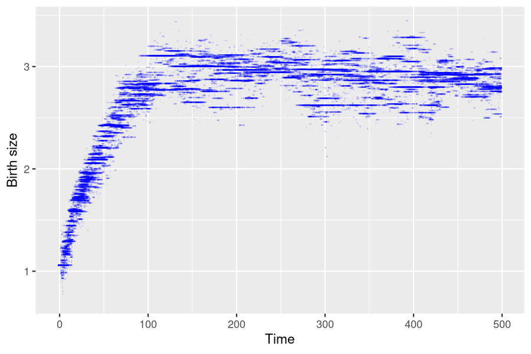
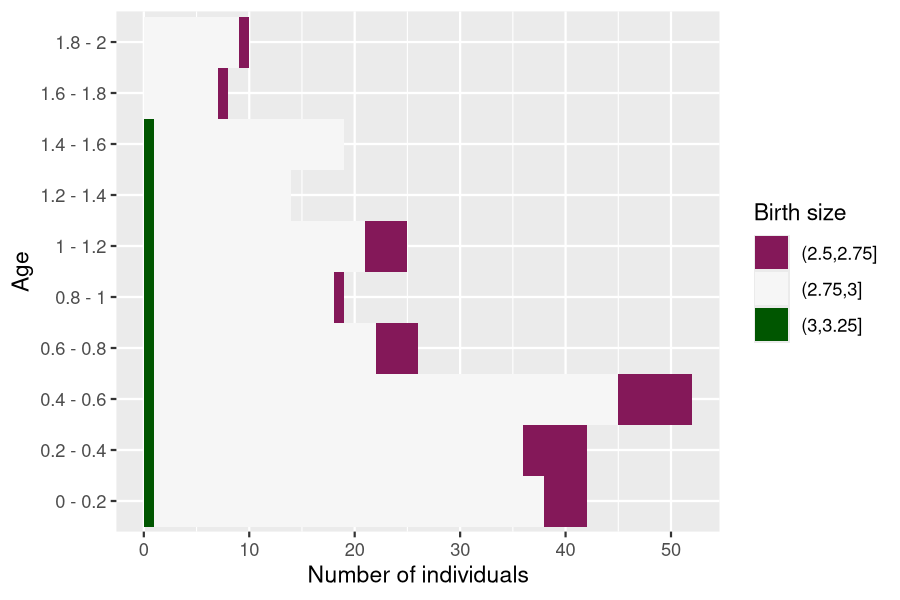
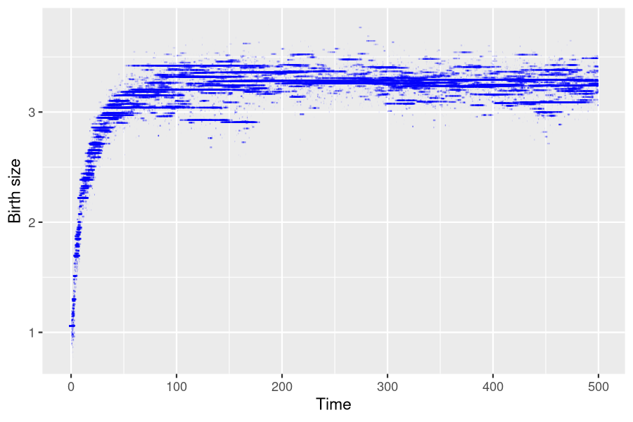

Population with genetically variable traits
Daphné Giorgi, Sarah Kaakai, Vincent Lemaire
Source:vignettes/IBMPopSim_interaction.Rmd
IBMPopSim_interaction.RmdThis document provides an example of usage of the package IBMPopSim, for simulating an interacting age-structured population with genetically variable traits, based on (Ferrière and Tran 2009).
See vignette('IBMPopSim') for a detailed presentation of the package.
1 Example description
We recall here the example 1 of (Ferrière and Tran 2009).
Individuals are characterized by their body size at birth \(x_0 \in [0,4]\), which is a heritable trait subject to mutation, and by their physical age \(a \in [0,2]\). The body size is an increasing function of age, and the size of an individual of age \(a\) is
\[x=x_0 + ga,\]
where \(g\) is the growth rate, which is assumed to be constant and identical for all individuals.
There are 2 possible events :
- Birth: Each individual can give birth to an offspring, with an intensity
\[b(x_0) = \alpha (4 - x_0)\]
depending on a parameter \(\alpha\) and its initial size. Smaller individuals have a higher birth intensity. When a birth occurs, the new individual have the same size than his parent with a high probability \(1-p\). A mutation can occur with probability \(p\) and then the birth size of the new individual is
\[x_0' = \min(\max(0, x_0 + G), 4),\]
where \(G\) is a Gaussian random variable \(\mathcal{N}(0,\sigma^2)\).
- Death: Due to competition between individuals, the death intensity of an individual depends on the size of other individuals in the population. Bigger individuals have a better chance of survival, and if an individual of size \(x_0 +ga\) encounters an individual of size \(x_0'+ ga'\), then it can die with the intensity
\[ U (x_0 + g a, x_0' - g a'),\]
where the interaction function \(U\) is defined by
\[U(x,y) = \beta \left( 1- \frac{1}{1+ c\exp(-4(x-y))}\right).\]
The death intensity of an individual of size \(x_0 + ga\) at time \(t\) is thus the result of the interactions with all individuals in the population (including himself)
\[d(x_0,a,t,pop) = \sum_{(x_0', a') \in pop} U (x_0 + g a, x_0' + g a').\]
2 Population creation
The initial population is a generated ?population of 900 individuals, with birth date uniformly chosen in [0,2] and with all the same birth size \(x_0 = 1.06\).
# Generate population
N <- 900
x0 <- 1.06
agemin <- 0.
agemax <- 2.
pop_df_init <- data.frame(
"birth" = -runif(N, agemin, agemax),
"death" = as.double(NA),
"birth_size" = x0
)
pop_init <- population(pop_df_init)
get_characteristics(pop_init)
## birth_size
## "double"3 Events and model creation
There are 2 possible events :
- Birth (with or without mutation)
- Death
Each event is characterized by its intensity and kernel code, described below.
3.1 Birth event with individual intensity
An individual of size \(x_0 \in [0,4]\) gives birth at the age independent rate given by
\[b(x_0) = \alpha (4 - x_0)\]
Since the intensity only depends on the individual’s characteristics, the event intensity is of type individual.
With probability \(p = 0.03\) a mutation occurs, and with probability \(1 - p\), the offspring inherits its parent’s trait, \(x_0\). In the case of a mutation, the new trait is \(x_0' = \min(\max(0, x_0 + G), 4)\), where \(G\) is a Gaussian r.v. with expectation 0 and variance \(\sigma^2=0.01\).
The birth event is then an individual event of type birth, created as follows:
3.1.2 Event creation
birth_event <- mk_event_individual( type = "birth",
intensity_code = 'result = alpha * (4 - I.birth_size);',
kernel_code = 'if (CUnif() < p)
newI.birth_size = min(max(0., CNorm(I.birth_size, sigma)), 4.);
else
newI.birth_size = I.birth_size;')3.2 Death event with interaction
The death intensity of an individual with trait \(x_0 \in [0, 4]\) and age \(a \in [0, 2]\) is given by:
\[d(x_0,a,t,pop) = \sum_{(x_0', a') \in pop} U (x_0 + g a, x_0' + g a').\]
where
\[U(x,y) = \beta \left( 1- \frac{1}{1+c\exp(-4(x-y))}\right) \in \left[ 0, \beta\right] \]
This event intensity depends on the interaction kernel \(U\), and is of type interaction.
3.2.1 Parameters
# parameters for death event
params_death <- list(
"g" = 1,
"beta" = 2./300.,
"c" = 1.2
)3.2.2 Event creation
death_event <- mk_event_interaction( # Event with intensity of type interaction
type = "death",
interaction_code = "double x_I = I.birth_size + g * age(I,t);
double x_J = J.birth_size + g * age(J,t);
result = beta * ( 1.- 1./(1. + c * exp(-4. * (x_I-x_J))));"
)3.3 Model creation
model <- mk_model(
characteristics = get_characteristics(pop_init),
events = list(birth_event, death_event),
parameters = c(params_birth, params_death)
)
summary(model)
## Events description:
## [[1]]
## Event class : individual
## Event type : birth
## Event name : birth
## Intensity code : 'result = alpha * (4 - I.birth_size);'
## Kernel code : 'if (CUnif() < p)
## newI.birth_size = min(max(0., CNorm(I.birth_size, sigma)), 4.);
## else
## newI.birth_size = I.birth_size;'
## [[2]]
## Event class : interaction
## Event type : death
## Event name : death
## Intensity code : 'double x_I = I.birth_size + g * age(I,t);
## double x_J = J.birth_size + g * age(J,t);
## result = beta * ( 1.- 1./(1. + c * exp(-4. * (x_I-x_J))));'
## Kernel code : ''
##
## ---------------------------------------
## Individual description:
## names: birth death birth_size
## R types: double double double
## C types: double double double
## ---------------------------------------
## R parameters available in C++ code:
## names: p sigma alpha g beta c
## R types: double double double double double double
## C types: double double double double double double4 Simulation
Event bounds
Bounds for the birth intensity and the death interaction function \(U\) have to be computed.
birth_intensity_max <- 4*params_birth$alpha
interaction_fun_max <- params_death$beta
T = 500
# Multithreading is NOT possible due to interaction between individuals
sim_out <- popsim(model = model,
initial_population = pop_init,
events_bounds = c('birth'=birth_intensity_max, 'death'=interaction_fun_max),
parameters = c(params_birth, params_death),
age_max = 2,
time = T)
sim_out$logs["duration_ns"]
## duration_ns
## 986655 Outputs
The output population sim_out$population contains all individuals who lived in the population over the period [0,500].
str(sim_out$population)
## Classes 'population' and 'data.frame': 330118 obs. of 3 variables:
## $ birth : num 498 498 498 498 498 ...
## $ death : num NA NA NA NA NA NA NA NA NA NA ...
## $ birth_size: num 2.56 2.43 2.77 2.56 2.3 ...
pop_out <- sim_out$populationPopulation size at \(t=500\).
pop_size <- nrow(population_alive(pop_out,t = 500))
pop_size
## [1] 352Result from (Ferrière and Tran 2009) can be reproduced from the simulation. For each individual in the population, we draw below a line representing its birth size during its life time.

6 Simulation with different parameters
The model can be simulated with different parameters without being recompiled.
6.1 Impact of aging velocity
The ageing velocity has an impact on the distribution of birth sizes of over time.
params_death$g <- 0.3Events bounds are not modified since they do not depend on \(g\).
sim_out <- popsim(model = model,
initial_population = pop_init,
events_bounds = c('birth'=birth_intensity_max, 'death'=interaction_fun_max),
parameters = c(params_birth, params_death),
age_max = 2,
time = T)
pop_out <- sim_out$population
ggplot(pop_out) +
geom_segment(aes(x=birth, xend=death, y=birth_size, yend=birth_size),
na.rm=TRUE, colour="blue", alpha=0.1) +
xlab("Time") + ylab("Birth size")
Evolution of age pyramid by birth size
?age_pyramid returns the age pyramid of the population, by birth size at a given time.
pyr <- age_pyramid(pop_out, ages = seq(0,2,by=0.2), time = 500)
head(pyr)
## age birth_size value
## 1 0 - 0.2 1.903313 1
## 2 0.2 - 0.4 1.903313 1
## 3 0.4 - 0.6 1.903313 0
## 4 0.6 - 0.8 1.903313 0
## 5 0.8 - 1 1.903313 0
## 6 1 - 1.2 1.903313 0The age pyramid can be plotted, with a visualization of the individuals birth size, starting by defining discrete birth sizes subgroups, and by assigning a color to each subgroup.
pyr$group_name <- as.character(cut(pyr$birth_size+1e-6, breaks = seq(0,4,by=0.25)))
head(pyr)
## age birth_size value group_name
## 1 0 - 0.2 1.903313 1 (1.75,2]
## 2 0.2 - 0.4 1.903313 1 (1.75,2]
## 3 0.4 - 0.6 1.903313 0 (1.75,2]
## 4 0.6 - 0.8 1.903313 0 (1.75,2]
## 5 0.8 - 1 1.903313 0 (1.75,2]
## 6 1 - 1.2 1.903313 0 (1.75,2]
library(colorspace)
lbls <- sort(unique(pyr$group_name))
# Attribution of a color to each subgroup
colors <- c(diverging_hcl(n=length(lbls), palette = "Red-Green"))
names(colors) <- lbls?plot.pyramid allows the user to plot the age pyramid at a given time of a population composed of several subgroups, given an age pyramid with a column named group_name (only needed for displaying several subgroups).
plot(pyr, group_colors = colors, group_legend = 'Birth size')
Due to the interaction between individuals, only bigger individuals survive at higher ages.
Several age pyramids at different times can be computed similarly at different times by calling ?age_pyramids.
pyrs <- age_pyramids(pop_out, ages = seq(0,2,by=0.2), time = 50:500)
pyrs$group_name <- as.character(cut(pyrs$birth_size+1e-6, breaks = seq(0,4,by=0.25)))
lbls <- sort(unique(pyrs$group_name))
colors <- c(diverging_hcl(n=length(lbls), palette = "Red-Green"))
names(colors) <- lbls
# Only working for html render of the vignette
# library(gganimate)
# anim <- plot(pyrs, group_colors = colors, group_legend = 'Birth size') +
# transition_time(time) +
# labs(title = "Time: {frame_time}")
# animate(anim, nframes = 450, fps = 10)6.2 Increase in initial population size
We can do the same simulation with a bigger initial population. In order for the population size to stay approximately constant, the birth (resp. death) intensity are increased (resp. decreased).
N <- 2000
pop_df_init_big <- data.frame(
"birth" = -runif(N, agemin, agemax), # Age of each individual chosen uniformly in [0,2]
"death" = as.double(NA),
"birth_size" = x0 # All individuals have initially the same birth size x0.
)
pop_init_big <- population(pop_df_init_big)
params_birth$alpha <- 4
params_birth$p <- 0.01 # Mutation probability
params_death$beta <- 1/100
params_death$g <- 1The birth intensity bound and interaction function bound must be updated before simulation.
birth_intensity_max <- 4*params_birth$alpha
interaction_fun_max <- params_death$beta
sim_out <- popsim(
model = model,
initial_population = pop_init_big,
events_bounds = c('birth'=birth_intensity_max, 'death'=interaction_fun_max),
parameters = c(params_birth, params_death),
age_max = 2,
time = T)
pop_size <- nrow(population_alive(sim_out$population, t = 500))
pop_size
## [1] 1629
ggplot(sim_out$population) +
geom_segment(aes(x=birth, xend=death, y=birth_size, yend=birth_size),
na.rm=TRUE, colour="blue", alpha=0.1) +
xlab("Time") +
ylab("Birth size")
7 Model with “full” simulation algorithm
In the presence of interactions, the randomized algorithm (activated by default in ?mk_event_interaction) is much faster than the standard algorithm (named full) which requires to iterate through the population vector at each candidate event time.
# Comparison full vs random
death_event_full <- mk_event_interaction(type = "death",
interaction_type= "full",
interaction_code = "double x_I = I.birth_size + g * age(I,t);
double x_J = J.birth_size + g * age(J,t);
result = beta * ( 1.- 1./(1. + c * exp(-4. * (x_I-x_J))));"
)
model_full <- mk_model(characteristics = get_characteristics(pop_init),
events = list(birth_event, death_event_full),
parameters = c(params_birth, params_death))
sim_out_full <- popsim(model = model_full,
initial_population = pop_init_big,
events_bounds = c('birth' = birth_intensity_max, 'death' =interaction_fun_max),
parameters = c(params_birth, params_death),
age_max = 2,
time = T)
sim_out_full$logs["duration_ns"]/sim_out$logs["duration_ns"]
## duration_ns
## 53.68541